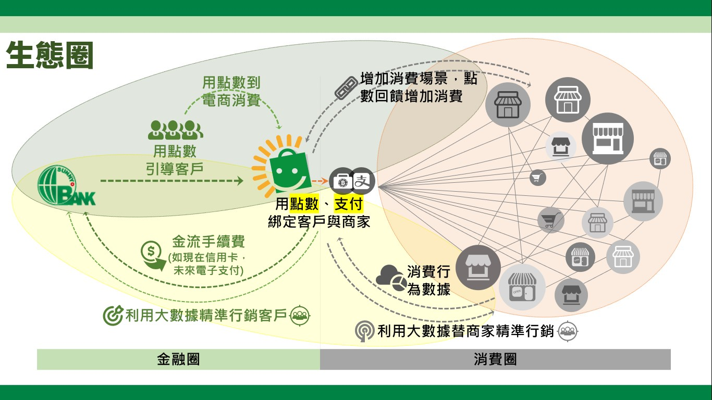

金融生態圈
2021.3.15
生態圈
生物與其生存環境之間關係緊密，是一個不可分割的整體， 系統中的所有參與者有捕食、競爭、共生等關係，彼此相互交流，命運與共，一個環節出現問題將會影響整個系統的平衡。
金融生態圈
金融生態圈是指金融中不同業態不同個體之間的相互融合與淘汰，那些具有協同效應及相乘效果的個體有效地組織再一起，形成動態地自我更新與進化的集群。
銀行
- 2.0
How customer behaviour and technology will change the future or financial services. - 3.0
Banking is no longer somewhere you go, but something you do. - 4.0
Banking everywhere, Never at a Bank.
發展中的生態圈

BaaS
Banking as a Services
- 銀行即是服務
- 銀行服務結構沒有改變，但改為嵌入別人的場景
- 玉山銀行
BaaP
Banking as a Platform
- 銀行為平台提供者，透過開放 API 讓其他業者商品上架至銀行平台
- 英國 Starling 銀行網路平台上架各種同異業商品
- LINE Bank
Open Banking
開放銀行
- 與第三方服務提供合作, 讓金融科技業與銀行透過 API 接
- 統一規格、標準
- 金管會目前正在擬定
場景金融
- 銀行自己發點數
- 買別人的點數
- 準內部點數
建構生態圈
- 銀行用點數導引客戶至電商註冊並消費
- 電商建構生態圈
- 運用消費金流資料 KYC，提供客製化金融服務
銀行用點數導引客戶至電商

電商建構生態圈
運用消費資料提供客製化服務
生態圈
支付
2025 年行動支付普及率目標： 90%
- 電子票證
- 第三方支付
- 電子支付
點數
點數是生態圈客戶忠誠度的黏著劑
- 工具：改變消費者行為的工具
- 誘因：提供小誘因增加消費
- 貨幣：生態圈可以流通的貨幣
- 常態或變態
生態圈的好處
- 數位客戶：維護成本低
- 演算法：精準行銷
- 大數據行銷：得資料者得天下
- 共生共榮：Banking everywhere, Never at a Bank.
實務面討論
點數
- 卡部紅利點數回饋
- 消金給 1000 點回饋？
支付
- 信用卡支付
- 電子支付
演算法
- 行為
- 訊息
- 分類
- 貼標
- 驗證
- 再修正
數位轉型
- 數位代替書面、檔案代替紙本
- 數位化工具：Email、電視、筆電、ipad、共用空間、無線網路、視訊會議
- 優化內網、官網、網銀，引入 UI/UX
- 架構數位化報表：網銀數字、登入次數、數位帳戶、電子帳單
- 建立數據分析團隊